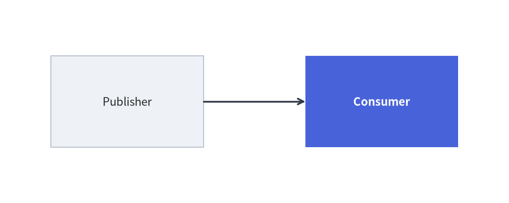
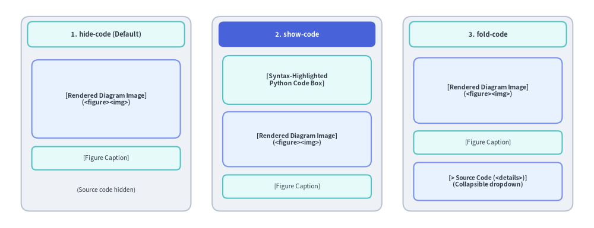

Embedded Code Blocks (drawlib)
Drawlib allows you to embed Python drawing scripts directly into Markdown documents using the drawlib code fence. The builder compiles these blocks into vector images during site or document builds, automatically generating HTML elements, companion image files, and syntax-highlighted code blocks.
1. Basic Code Fence Syntax
Embedded drawing blocks use the drawlib language identifier:
from drawlib.canvas import save, setup
from drawlib.shapes import rectangle
from drawlib.lines import line
from drawlib.styles import Styles
setup(width=100, height=40)
rectangle((25, 20), width=30, height=18, style=Styles.Neutral, text="Publisher")
rectangle((75, 20), width=30, height=18, style=Styles.PrimaryFlat, text="Consumer", text_style=Styles.WhiteBold)
line((40, 20), (60, 20), arrow_head="->", style=Styles.DarkBold)
save()

2. Header Attributes Reference
Options are specified space-delimited on the opening code fence line (supporting both positional shorthand tokens and key:value / key=value pairs):
``` drawlib [DISPLAY_MODE] [WIDTH] [ALIGNMENT] [file:NAME] [caption:"TEXT"] [OPTIONS...]
(Note: In authoring, replace the brackets with your desired configuration options without the space after the backticks.)
2.1 Code Display Modes
| Option / Key-Value | HTML Rendering Behavior | Markdown Rendering Behavior |
|---|---|---|
hide-code / code:hide (default) |
Displays image only (<figure><img ...></figure>). |
Replaces block with standard Markdown image link. |
show-code / code:show |
Displays syntax-highlighted code block followed immediately by the image. | Renders code block followed by image link. |
fold-code / code:fold |
Displays image followed by a collapsible dropdown (<details><summary>Source Code</summary>...</details>). |
Displays image followed by collapsed details dropdown. |

Source Code
from drawlib.canvas import save, setup
from drawlib.shapes import rectangle
from drawlib.styles import Styles
from drawlib.text import text
setup(width=140, height=54)
# 1. Left Card: hide-code (Default)
rectangle((25, 27), width=40, height=46, style=Styles.Neutral.patch(shape_r=2.0))
rectangle(
(25, 45.8),
width=37,
height=6.0,
style=Styles.SecondaryNeutral.patch(shape_r=1.2),
text="1. hide-code (Default)",
text_style=Styles.DarkBold.patch(text_size=8.0),
)
rectangle(
(25, 30.5),
width=35,
height=18.5,
style=Styles.PrimaryNeutral.patch(shape_r=1.5),
text="[Rendered Diagram Image]\n(<figure><img>)",
text_style=Styles.DarkBold.patch(text_size=7.6),
)
rectangle(
(25, 16.5),
width=35,
height=5.5,
style=Styles.SecondaryNeutral.patch(shape_r=1.0),
text="[Figure Caption]",
text_style=Styles.Dark.patch(text_size=7.4),
)
text((25, 9.0), "(Source code hidden)", style=Styles.Dark.patch(text_size=7.2))
# 2. Center Card: show-code (PrimaryFlat header banner)
rectangle((70, 27), width=40, height=46, style=Styles.Neutral.patch(shape_r=2.0))
rectangle(
(70, 45.8),
width=37,
height=6.0,
style=Styles.PrimaryFlat.patch(shape_r=1.2),
text="2. show-code",
text_style=Styles.WhiteBold.patch(text_size=8.0),
)
rectangle(
(70, 35.0),
width=35,
height=11.5,
style=Styles.SecondaryNeutral.patch(shape_r=1.5),
text="[Syntax-Highlighted\nPython Code Box]",
text_style=Styles.DarkBold.patch(text_size=7.5),
)
rectangle(
(70, 21.0),
width=35,
height=13.0,
style=Styles.PrimaryNeutral.patch(shape_r=1.5),
text="[Rendered Diagram Image]\n(<figure><img>)",
text_style=Styles.DarkBold.patch(text_size=7.5),
)
rectangle(
(70, 9.8),
width=35,
height=5.5,
style=Styles.SecondaryNeutral.patch(shape_r=1.0),
text="[Figure Caption]",
text_style=Styles.Dark.patch(text_size=7.4),
)
# 3. Right Card: fold-code
rectangle((115, 27), width=40, height=46, style=Styles.Neutral.patch(shape_r=2.0))
rectangle(
(115, 45.8),
width=37,
height=6.0,
style=Styles.SecondaryNeutral.patch(shape_r=1.2),
text="3. fold-code",
text_style=Styles.DarkBold.patch(text_size=8.0),
)
rectangle(
(115, 32.5),
width=35,
height=15.5,
style=Styles.PrimaryNeutral.patch(shape_r=1.5),
text="[Rendered Diagram Image]\n(<figure><img>)",
text_style=Styles.DarkBold.patch(text_size=7.6),
)
rectangle(
(115, 20.2),
width=35,
height=5.5,
style=Styles.SecondaryNeutral.patch(shape_r=1.0),
text="[Figure Caption]",
text_style=Styles.Dark.patch(text_size=7.4),
)
rectangle(
(115, 11.0),
width=35,
height=9.0,
style=Styles.PrimaryNeutral.patch(shape_r=1.2),
text="[> Source Code (<details>)]\n(Collapsible dropdown)",
text_style=Styles.DarkBold.patch(text_size=7.3),
)
save()
2.2 Complete Fence Attributes Reference
| Category | Attribute Syntax | Default | Description |
|---|---|---|---|
| Filename | file:<name.png> |
(Required in docs) | Explicit output filename in <doc_stem>_images/<name.png> (or images/<slide_stem>/<name> in slides). |
| Image Format | format:<fmt>, fmt:<fmt> |
png (svg in slides) |
Output image format (png, webp, svg, apng) if not inferred from file: extension. |
| Width | 650px, 80%, width:650px, w:80% |
None (natural size) |
CSS display width (px, %, rem, vw, or bare number → px). |
| Height | height:400px, h:300 |
None |
Optional CSS display height override. |
| Alignment | center, left, right, align:center, a:left |
center |
Horizontal figure alignment on the page (left, center, right). |
| Caption | caption:"Text" or caption:'Text' |
None |
Wraps the figure in semantic <figure> and <figcaption> elements. |
| CSS Class | class:hero-fig, css_class:"card shadow" |
None |
Appends custom CSS classes to the figure wrapper. |
| Cache Control | no-cache, cache:false |
False |
Forces this specific block to re-execute on every build, bypassing .drawlib/cache.db. |
| Slide Stage Placement | slot:<name>, xy:(x,y) / pos:(x,y), size:(w,h) / dim:(w,h), z:<int> / z-index:<int> |
None |
Stage slot, explicit (x, y) pixel position, (w, h) pixel size, and z-index layer depth for 16:9 slides. |
| Slide Animation Controls | anim-trigger:auto|click, anim-loop:once|infinite, anim-pause:2,4 |
auto, infinite, [] |
Controls interactive <canvas> animation playback in HTML slide decks (see Slide Deck Project Guide). |
[!TIP] Best Practice for AI & Automation: Always specify an explicit
file:<name>.pngattribute for every embedded block. Named blocks prevent numbering shifts when diagrams are inserted or removed, produce clean asset directories, and allow individual diagrams to be verified deterministically viadrawlib show <file.md> <image_name.png>.
[!NOTE] Animations in Code Blocks (APNG & WebP): Embedded
drawlibblocks fully support generating multi-frame animated illustrations usingfrom drawlib.anim import Animation. The document compiler automatically outputs an animated PNG (APNG) or Animated WebP file based on thefile:extension (.png,.apng, or.webp). See Animations Overview (APNG & WebP) for full details.
2.3 HTML <script type="text/drawlib"> Alternative Syntax
When authoring raw .html documents instead of .md files, you can embed Drawlib blocks using <script type="text/drawlib"> tags with standard HTML attributes (width="600px", align="center", file="arch.png", caption="Architecture", code="fold").
3. Working Directory & Path Resolution
When compiling embedded code blocks:
- Working Directory (
os.chdir): Drawlib automatically sets the current working directory to the directory containing the Markdown document (or project root when_assets/resides at the root). - Relative File Paths: Relative paths to local assets (e.g.
image("../_assets/logo.png")) resolve identically whether runningdrawlib buildor testing withdrawlib show. - Module Resolution (
sys.path): The document directory and project root are added tosys.path, allowing you to import local helper modules (such asimport stylesorimport utils).
4. Canvas Isolation & Sandbox
- Automatic Clear: Drawlib invokes
canvas.clear()before executing each embedded code block. State, shapes, and settings from a preceding diagram will never contaminate subsequent blocks. - Explicit Imports: Embedded drawing blocks use explicit imports (e.g.
from drawlib.shapes import circle,from drawlib.styles import Styles). This guarantees clean namespace boundaries, full IDE autocompletion support, and self-contained reproducibility. - Automatic Capture &
save()Handling: The Document Builder automatically captures the canvas and renders the companion image to disk when a block finishes execution. Callingsave()within a block is optional; if present, the engine safely intercepts it to prevent duplicate file writes or collisions. In complete examples, includingsave()(without arguments) is recommended to maintain 100% copy-paste portability with standalone Python scripts.
5. Rapid Verification Workflow (drawlib show)
Do not run a full site build to verify coordinate adjustments on a single diagram. Inspect individual code blocks instantly using drawlib show:
# 1. List all available drawlib blocks in a Markdown document (index, line number, target filename):
uv run drawlib show docs_src/my_doc.md
# 2. Render a specific block by its explicit file: name with coordinate grid (-g) (Recommended):
uv run drawlib show docs_src/my_doc.md code_blocks_service_arch.png -g -o .drawlib/scratch/preview.png
# 3. Or target a block by 1-based index (1, 2, or -1 for the last block):
uv run drawlib show docs_src/my_doc.md 1 -g -o .drawlib/scratch/preview.png